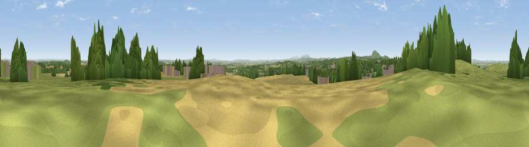

Redhill
#11194 in England · top 22% of its area beats it · near Priorslee VillageThe view, rendered

A 360° render of this exact spot computed from the terrain model, tree cover and land cover — summer colours, afternoon light, calibrated against photographs of famous viewpoints. Real trees, hedges and buildings will differ in detail.
The panorama
Grey silhouette: terrain skyline in each direction (720 bearings, Earth curvature and refraction included). Dashed green: skyline with trees (+15 m) and buildings (+8 m) as obstacles. Blue strip: how far the ground is visible on each bearing.
Where the view opens
Wedge length = distance to the farthest visible ground on that bearing (vegetation-aware). Rings at 10, 25 and 50 km.
What fills the view
33% grassland · 28% cropland · 27% woodland · 11% built-up
Angular shares of the visible panorama (visual magnitude), not map area. Landscape diversity 0.59 (0–1 Shannon).
Key numbers
More beautiful places nearby
The staircase of upgrades: each row has a higher view potential than everything closer. Driving times are estimates from straight-line distance, calibrated against real road routing — check an actual route before setting out.
| Place | Direction | Drive | Score |
|---|---|---|---|
| Viewpoint near Priorslee Village | N · 1 km | ~3 min | 70.4 |
| The Ercall | W · 8 km | ~17 min | 79.4 |
| Viewpoint near Little Wenlock | WSW · 10 km | ~19 min | 84.2 |
| The Wrekin | WSW · 10 km | ~20 min | 85.0 |
| Viewpoint near Little Wenlock | WSW · 11 km | ~20 min | 86.6 |
| North Hill | S · 65 km | ~87 min | 86.8 |
| Worcestershire Beacon | S · 66 km | ~89 min | 87.1 |
| Viewpoint near Cartmel | NNW · 173 km | ~194 min | 87.2 |
52.69472, -2.40393 · source: dobih hill · position refined by local search. Computed location — check access rights before visiting.